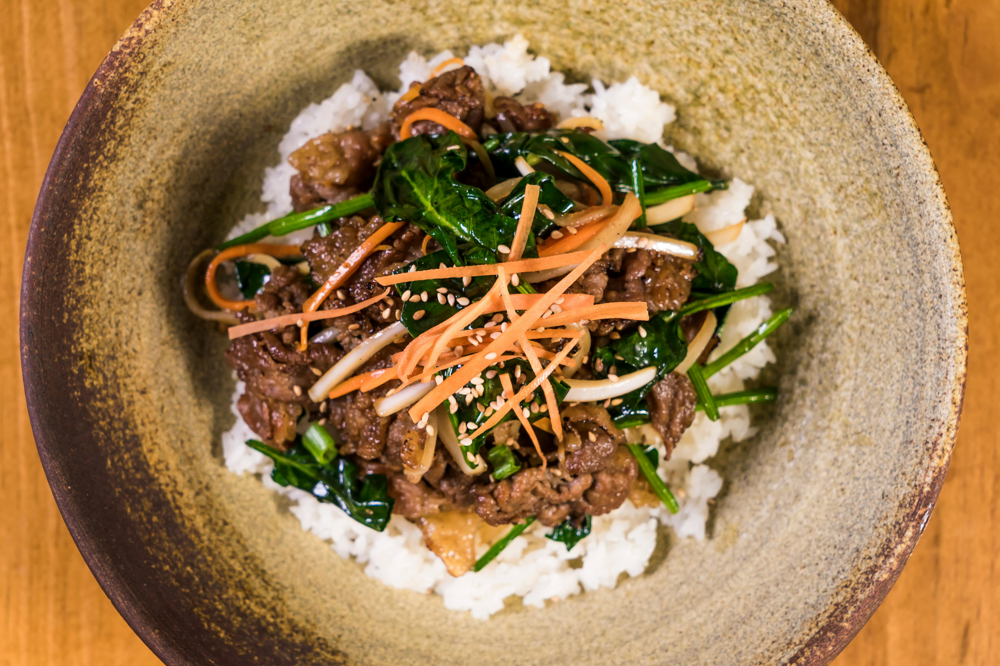

Back to Home
Korean Beef Bulgogi

Description
If you love Korean food, you have to try this amazing twist on bulgogi beef! Bulgogi is usually made with thinly shaved slices of beef, marinated and flame licked. This dish, on the other hand, has the delicious taste you know and love, but is made with ground beef and served as a rice bowl. The whole recipe is anxiety-free and takes just a few minutes. Your kids and friends will love this healthier dinner, and you will feel like you're on the streets of Seoul.
Ingredients
- 1 pound lean ground beef
- 1 tablespoon sesame oil
- ¼ cup brown sugar
- ¼ cup soy sauce
- ¼ cup water
- ½ Asian pear, grated
- 5 cloves garlic, minced, or more to taste
- 1 inch piece ginger, peeled and diced
- 1 teaspoon red pepper flakes
- ½ teaspoon ground black pepper
- 1 cup cooked brown rice, or more to taste
- 1 head romaine lettuce, chopped, or to taste
- 1 cucumber, diced
- 1 red bell pepper, diced, or to taste (Optional)
- 1 tablespoon sesame seeds, or to taste (Optional)
Steps
- Heat a large skillet over medium-high heat. Cook and stir beef in the hot skillet until browned and crumbly, 5 to 7 minutes. Drain and discard grease. Mix in sesame oil.
- Combine brown sugar, soy sauce, water, Asian pear, garlic, ginger, red pepper flakes, and black pepper in a food processor. Blend until combined but still slightly chunky. Pour mixture into the skillet with the beef and cook over medium heat until most of the liquid evaporates, 7 to 9 minutes.
- Place 1/4 the cooked brown rice in the bottom of an individual serving bowl. Top with a portion of beef mixture, lettuce, cucumber, red bell pepper, and sesame seeds. Repeat with remaining rice, beef, and toppings.